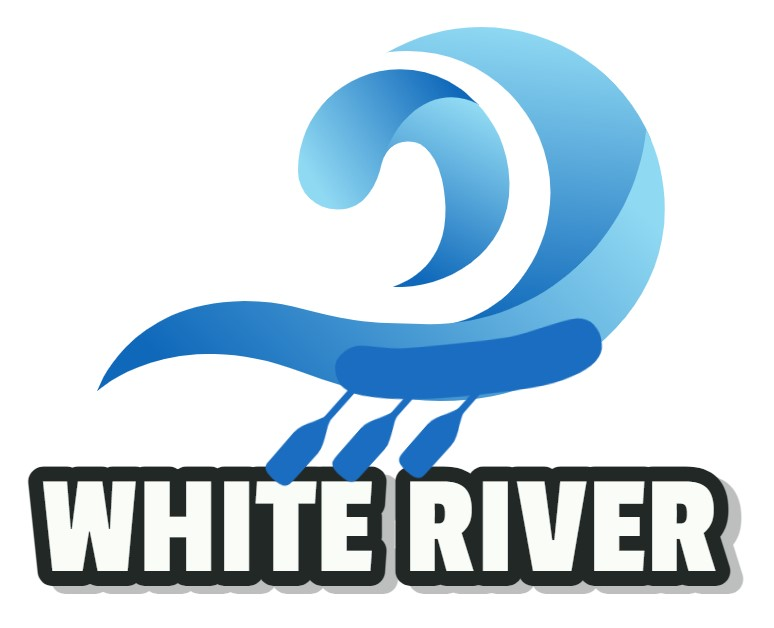

Overview
Purpose
The purpose of this website is to be an easy online discovery and booking tool for our customers plannning their next adventure. We want to be simple, fast and optimized for all formats - web, mobile and app. Our purpose will include, increase new bookings and allow repeated customers to book the same or new adventures.
Audience
Our customers are in the high tech industry and are very savvy with technology. They want to research and book an adventure without the need to call or talk to someone, they demand that all channels - web, mobile or app, have the same functionality and ability to complete the whole planning. They are graduates with 5+ year of experience in their field and have disposible income for this type of activity. There are 2 categories of customers, first-timers and repeated booking.
Branding
Website Logo
Style Guide
Color Palette
Palette URL:
https://colorhunt.co/palette/344d676eccafade792f3ecb0| Primary | Secondary | Accent 1 | Accent 2 |
|---|---|---|---|
| #344D67 | #6ECCAF | #ADE792 | #F3ECB0 |
Typography
Heading Font: Original Surfer
Paragraph Font: Jost
Normal paragraph example
The best Whitewater Rafting in Colorado, WHITE RIVER Rafting Company offers rafting on the Colorado and Roaring Fork Rivers in Glenwood Springs. Since 1974, we have been family owned and operated, rafting the Shoshone section of Glenwood Canyon and beyond.
Colored paragraph example
Trips vary from mild and great for families, to trips exclusively for physically fit and experienced rafters. No matter what type of river adventures you are seeking, WHITE RIVER Rafting Company can make it happen for you.
Navigation
Site Map
Wireframes
Home